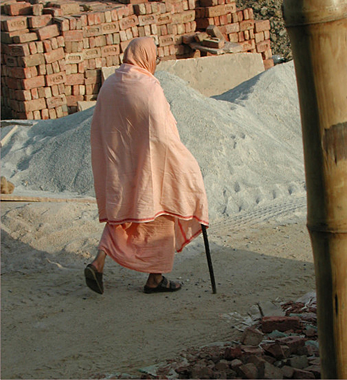

нектара



Шрила Бхакти Сундар Говинда Дев-Госвами Махарадж
Капли нектара
Чего бы мы ни желали в этом бренном мире, пребывая в обусловленном состоянии, — превыше всего этого, в трансцендентном мире, божественная любовь всегда ожидает нас, желая заключить в свои объятия. Это реальное положение вещей и тот, кто осознал его, не может жить, не делясь этим даром с другими. Это — сознание Кришны.
Все мы — дети нектара, дети нектарного океана, поэтому необходимо, чтобы каждый обнаружил это богатство и осознал, что оно внутри, в его сердце. В этом поиске нам способен помочь тот, кто покажет, каким образом это богатство можно легко обнаружить. Таково сознание Кришны.
В чем мы действительно нуждаемся — это хорошие друзья и благое общение. Благодаря этому мы сможем с радостью двигаться дальше. И еще один фактор важен: если наша преданность безупречна, к нам низойдет вера с высшего уровня и защитит нас. Если кто-то полностью предан Кришне в Его облике Гуру или садху , Кришна, несомненно, защитит его. Он обязан взять под защиту такого преданного.
Пожалуйста, продолжайте совместно воспевать святые имена Господа — продолжайте Харинама- санкиртану , — благодаря этому все трансцендентное знание раскроется в ваших сердцах.
Харинама- санкиртана — это юга-дхарма , религия для этой эпохи, и если вы с радостью ее продолжите, Господь, который уже пребывает в ваших сердцах, милостиво проявит Себя — Господь и Его Имя тождественны.
В настоящее время многие люди могут столкнуться с разнообразными трудностями, но этот особый вид знания — сознание Кришны — низойдет к заключенным, спящим во власти майи .
«Предаваться», «преданный», «преданность». Эти слова столь сладки, потому что в них заключена идея постоянной самоотдачи, а не стяжательства.
Необходимо подлинное вúдение, и это главное. Иначе созерцание Божества, Дхамы или чего-либо еще — не более чем упражнение для глаз. Это не подлинное видение, и это не принесет нам настоящей пользы.
Мы не должны быть равнодушны, но мы должны быть добры.
Такова вайшнава-дхарма : доброжелательное отношение ко всем душам (дживам), воспевание имен Кришны без оскорблений и служение вайшнавам.
Мы считаем себя самыми удачливыми, поскольку наш хранитель — Шрила Бхакти Ракшак Шридхар Дев-Госвами Махарадж. Мы стараемся служить ему наилучшим образом в обществе вайшнавов. В этом состоит наше счастье.
Природа души в этом мире — всегда быть активной. Если она действует должным образом, в духе преданности, это называется севой , и она получает самый большой выигрыш.
В нашем положении мы не можем постичь божественную любовь всех живых существ в той трансцендентной обители Кришны. Но, возможно, однажды, по милости Гурудева, она сможет раскрыться в наших сердцах. Тем не менее, мы всегда сохраняем надежду и не будем удовлетворены ничем иным.
Мы следуем Рупануга- сампрадае и не должны оставлять наш путь для того, чтобы обрести какое-либо иное вúдение.
Когда мы читаем писания, книги могут ввести нас в заблуждение, однако если мы обретем общество хорошего квалифицированного вайшнава, у нас не будет возможности впасть в заблуждение.
Сами писания дают совет Кришны, Вьясадевы и многих других: «Постарайтесь обрести общество достойных вайшнавов и оказывать им служение».
Настоящее служение состоит в прославлении вайшнавов, возглавляемых Шрилой Гуру Махараджем и его спутниками.
Главное в нашей жизни — это то, что мы нуждаемся в обществе преданных. Поэтому, где бы преданные Господа ни проводили регулярные духовные программы с воспеванием, мы должны стараться их посещать.
Мы должны издали поклоняться рага-патхе — пути спонтанного любовного служения, тогда как сами должны жить в соответствии с руководством Вед.
Киртан — первая ступень, но также и последняя. Киртан может поднять нас с низшего уровня на высший, рага-маргу .
На протяжении всего «Шримад-Бхагаватам» Шрила Шукадева Госвами ни разу не упоминает Имени Шримати Радхарани. Тем самым он пытается оградить свое изложение от сахаджиизма (подражательства).
Мы нуждаемся в хорошем общении, благодаря которому возрастет привязанность. В противном случае, способность развиваться на высшем плане к нам не придет.
Истинная преданность Кришне очень редко достижима. Если вы обнаружите где-либо подобную преданность, приобретите ее ценой своего страстного желания, лаульям . Лишь ваше рвение способно даровать вам вашу частичку этого достояния.
Нет нужды отчаиваться: особенно сейчас, в эту Кали-югу, много надежды. Махапрабху велел воспевать Харе Кришна маха-мантру без оскорблений — этим вы достигните всего.
Господь может очень легко повлиять на нас, но Он не желает делать этого. Он хочет, чтобы мы с воодушевлением, со всей преданностью старались служить Его окружению и Его лотосоподобным стопам.
Гуру — капитан корабля. Если мы не подчиняемся приказам капитана, — это наш недостаток, не его. Итак, мы должны сейчас постараться правильным образом посадить это семя. Это обязательство называется бхаджана-крией или правильным исполнением долга и служения в преданности.
Стремление к гьяне также следует отбросить. Предавшаяся душа живет с садху , прославляющим Кришну. Это главный урок, который возвысит душу-дживу . Это основной урок бхакти. Настоящая ананья-бхакти — исключительная преданность — начинается с этого.
Несмотря на то, что я не очень хорошо говорю по-английски, сознание Кришны передается от сердца к сердцу. Язык не способен передать столько, сколько трансцендентный звук. Харе Кришна маха-мантра и множество других мантр раскрыты в Ведах. Мы можем не понимать их смысла, но благодаря повторению их значение раскроется само.
Да, Гурудев — высший авторитет. Он предоставит визу в трансцендентный мир. Он авторитет, в этом нет сомнений.
Когда человек зачисляет результаты своих трудов на счет Кришны, тогда это бхакти-йога . А когда джива-душа переводит результаты своих трудов на свой счет, тогда это карма-йога . Это очень просто.
Гуру Махарадж говорил мне: «Ты должен заботиться о преданных, моих Божествах и моей Миссии». Это суть моей триданда-санньясы : «Я буду служить его преданным, буду служить его Божествам и его Миссии». И все вы — мое богатство, в этом я не сомневаюсь.
Преданность — самое ценное качество. Человек может происходить из низшей касты, может быть грихастхой или кем-то еще, но если он обладает преданностью, то он — лучший из всех людей.
Итак, мы можем видеть, что знание и трансцендентное знание — не одно и то же. Мы обретаем знание с помощью наших чувств на этом плане бытия, однако трансцендентное знание раскрывается в сердце, переданное тем, кто полностью сознает себя пребывающим на божественном плане бытия.
Вы не сможете постичь Абсолют с помощью ума и интеллекта. Сила мысли — наивысшая в этом материальном мире, ум может двигаться быстрее, чем эфир, но и он не поможет приблизиться к Нему. Господь — ачинтья (непостижимый).
Служение — это наша жизнь. Без служения все бесполезно.
Наша удача дарована нашим божественным учителем, и если мы обладаем сильной верой в нашего учителя, тогда мы сможем преодолеть все и вся.
Мы должны быть бесстрашными. Когда мой наставник со мной, я не должен беспокоиться ни о каких препонах.
У всех есть некоторые проблемы в этом материальном мире, он по природе несовершенен. Но выискивать во всем недостатки очень плохо.
Если я изучаю личность, почему я должен пытаться выявить ее недостатки? Скорее, мне следует искать в этой личности хорошие наклонности. Я должен увидеть их — таково учение моего наставника.
Мы можем осознать, какова природа преданности, только по милости божественного учителя.
Кришна предостерегает падшую душу: «Не оскорбляй Моих преданных, не недооценивай их положение. Ты не можешь увидеть, высоко или низко их положение, поэтому, когда бы ты ни увидел Моего преданного, поклонись ему и постарайся обрести его милость. Если тебе удастся какими-либо способами заслужить его благосклонность, это станет твоей величайшей удачей».
Итак, мы должны избегать вайшнава-апарадхи , и тогда мы сможем преуспеть во всем остальном в нашей духовной жизни.
Ашанта — это люди, всегда обеспокоенные иллюзорным окружением. Несмотря на это, человек может автоматически освободиться от последствий дурных поступков, если он сможет не желать выгоды для себя, но постарается постоянно выполнять служение, удовлетворяющее садху, Гуру и вайшнавов.
Итак, мы должны оказывать почтение всем и уважать каждого и предаться воле Бога, тогда вайшнавы будут добры к нам.
Мы медитируем на мантры и получаем от них свет. Так мы можем осознать, что только дух преданности может помочь нам, и преданность — высочайший и единственно подлинный способ практиковать сознание Кришны, служить вайшнавам.
Садху , святые, основывают ашрамы исключительно для блага обусловленных душ. Они столь добры, что ради того, чтобы помочь нам, подготавливают комнаты, жилье, делают столь много приготовлений лишь для того, чтобы мы могли обрести возможность служить центру, для того, чтобы помочь нам легко продвигаться к нашему духовному предназначению.
Гуру и вайшнавы нисходят из трансцендентного мира, из Чинмая Дхамы, которая полностью духовна. Мы также по своей природе духовны, поэтому они могут легко общаться с нами — душа с душой.
В обществе других преданных душ страху не будет места. В их компании мы становимся бесстрашными, поэтому всегда должны быть исполнены вдохновения увидеть преданных и оказаться в их обществе.
Я должен думать: «Я падшая душа, я не был действительно удачлив, но он (мой духовный наставник) сделал меня удачливым. И поэтому я счастлив. Так я обрету некое подлинное вúдение.
Гурудев вручает визу из земного в другой мир — в Кришна Дхаму. Он — ашрая-виграха , господин, которого мы принимаем как наше прибежище. Мы должны стараться воспевать [Святое Имя] и следовать его наставлениям, и тогда в нашей жизни не будет никаких настоящих проблем.
Где есть преданность, там нет проблем, а преданность основана на сильной вере. Первое, что необходимо — это сильная вера в Гуру и Кришну, иначе мы ничего не сможем сделать для Кришны.
У Кришны есть особое качество: когда раздаются звуки флейты Кришны, они привлекают всю вселенную. Но если наши уши заложены, мы не услышим их, поэтому в первую очередь необходимо очистить себя, тогда мы сможем воспринимать.
Эго есть у всех, никто не может сказать, что лишен его, но мы должны отбросить мирское эго и сохранить только одно эго: «Я слуга вайшнавов». Это главное постижение, в котором нуждается обусловленная душа.
Мир аханкары очень велик! Это не одно лишь эго; понятия «эго» недостаточно, это разрастающийся мир. Если мы сможем отделить себя от этого эгоистичного мира, тогда мы сможем тотчас же обосноваться в мире преданности, а после этого у нас не будет проблем.
Если кто-то следует наставлениям своего Гуру в настроении преданности — это бхакти, в противном случае — это благочестивая карма .
Кришна прояснил для нас все и дал нам очень простой метод: «Все, что вы делаете, и все, что намереваетесь сделать, — будь то принятие пищи, жертвоприношение, путешествия по каким-либо местам и прочее, — связывайте со Мной, тогда это будет бхакти ».
Преданный желает удовлетворить Кришну, а когда Кришна удовлетворен, то преданный удовлетворен вдвойне, и Кришна обнимает такого преданного.
Первый звук флейты Кришны, первозданный Ом, был услышан Господом Брахмой. Услышав его, Брахма опьянел. Он попытался медитировать на этот звук, и по милости Дивья Сарасвати через эту медитацию низошла Кама-гаятри. Все это объяснено в «Шри Брахма-самхите». Я с радостью советую вам попытаться прочесть эту книгу.
Четыре уникальных качества присутствуют в этом особом мире Вриндавана — мире самопредания. Он называется Враджа Дхама. Слово «враджа» — это глагол, действие, в значении «глубоко погрузиться в реальность».
Все мы обладаем некой способностью к постижению, но постижение это полностью основывается на нашем опыте материального мира. Поэтому все, что мы постигаем, мы воспринимаем мирским зрением. Такого рода вúдение культивировалось в нас с детства и, хотя мы можем обрести большой опыт в любой доступной сфере знаний, все же это будет мирским обретением.
Какое значение имеет для Рупануга-вайшнавов Его (Кришны) превосходство? Они очень близки ашрая-виграхе , Шримати Радхарани, и они всегда в Ее власти. Радхарани служит Кришне, прилагая все Свои силы, а они обеспечивают все необходимое для преданного служения.
Исключительная линия преданности Шрилы Рупы Госвами очень редко достижима в этом мире. Те, кто хочет обрести ее без усилий, будут обмануты и падут в черную дыру пракрита-сахаджиизма (подражательства) и больше не смогут выбраться из нее. Не стоит пытаться получить ее, не прикладывая усилий, но по милости Шри Гуру, по милости Радхарани это будет нетрудно.
Солнце восходит и заходит. Оно не рождается и не умирает. Так же явление и уход чистого вайшнава подобны восходу и закату солнца. И то и другое благоприятно для обусловленных душ этого мира. Когда вайшнавы уходят, они на все бросают свой милостивый взор, и любой, кто вспоминает о них, обретет эту милость.
Все, что связано с Гаурахари, вечно... Мы не можем постичь это своими ограниченными умами. Таким образом, Господь — ачинтья-бхедабхеда , Он появляется в образе Ачарьядева как высшее воплощение этого принципа.
Духовные братья Шрилы Гуру Махараджа ясно выразили свое глубокое уважение к Его Божественной Милости... Они сказали, что каждый раз, когда слушают Шрилу Шридхара Махараджа, они чувствуют себя под сенью Прабхупады Шрилы Бхактисиддханты Сарасвати Тхакура.
Красота всегда занимает положение в центре и привлекает всех при помощи звука. Тончайшая мелодия входит в сердца удачливых душ.
Мы не испытываем ненависти к другим. Если мы станем ненавидеть их, они уйдут. Посему мы должны следовать концепции Махапрабху: не следует ненавидеть никакую религию, но необходимо даровать ее представителям сознание Кришны. Итак, мы должны всегда устанавливать гармонию с другими, в противном случае, проповедь невозможна.
Только по милости садху и Гуру мы можем узнать о славе Шри Чайтаньядева, Того, Кто неизменно чист, полностью освобожден, Кто есть высшая реальность.
Суть проповеди Шри Чайтаньи Махапрабху очень проста: будь смиренным, терпеливым, оказывай почтение другим и практикуй сознание Кришны в линии Шри Рупы-Санатаны.
Настоящая жизнь — заниматься тем, что обладает вечной ценностью. Те, кто может делать что-либо, обладающее связью с миром вечности, получат вечный результат. Эта связь проходит через трансцендентное знание, сознание и деятельность. Поэтому у нас нет другого пути — только следование божественному руководству Шри Гуру.
Самое главное — воспевание без оскорблений, вместе с девятью видами деятельности этого пути преданности: шраванам, киртанам и т. д.
Шраванам и киртанам — наша главная деятельность. Постарайтесь внимательнейшим образом слушать достойного вайшнава, а затем попытайтесь проповедовать другим то, что услышали от него, для их и своего блага. Таков совет Махапрабху.
Идея и метод Махапрабху очень просты, и мы проповедуем их по всему миру разнообразнейшими способами. В разных странах преданные используют для проповеди различные методы, но все преследуют единую цель: практика сознания Кришны.
Я получил письмо, описывающее общество, которое создавалось посредством смешивания множества вайшнавских групп. Я могу определенно сказать, что если общество создается описанным образом, это противоречит принципу Шрилы Гуру Махараджа. Именно чтобы избежать этого, Шрила Гуру Махарадж создал отдельный Шри Чайтанья Сарасват Матх.
Шрила Гуру Махарадж не хотел, чтобы кто-то из его духовных братьев или других Гуру отклонил его от его собственного вúдения, поэтому он создал Шри Чайтанья Сарасват Матх. Более того, Шрила Сарасвати Тхакур возложил на Шрилу Гуру Махараджа ответственность за Рупануга- сампрадаю — это не вызывает сомнений, и все знают об этом.
Сама миссия пришла к нам как благословение, и сейчас Шри Чайтанья Сарасват Матх — очень большая миссия. Миссионерская работа определяется как постоянное совершение блага для других. Мы знаем, что единственно благоприятной является практика сознания Кришны. В этом материальном мире она — единственный свет жизни, единственный эликсир жизни.
Указание таково: всегда воспевать «Харе Кришна» без оскорблений.
Нароттам Дас Тхакур вложил в свое прославление Рупы Госвами всю сиддханту , высшее настроение преданности и высочайшее величие Рупы Госвами. Вплоть до наших дней эта особенная молитва преданности [«Шри Рупа-Манджари-пада»] — жизнь Гаудия-вайшнавов. Шрила Сарасвати Тхакур хотел услышать ее в последние мгновения своего пребывания в этом мире ни от кого другого, а именно от Шрилы Гуру Махараджа.
Подлинное достояние каждого пребывает глубоко сокрытым в его сердце и проявляется благодаря процессу шраванам и киртанам.
Сейчас вы живете в адских условиях, но Господь столь милостив, Он дает вам так много любви. Его любовный поиск потерянного слуги — наше богатство, а не богатство Бога.
Мы следуем нашему методу практики. Это даст нам высшее благо в нашей духовной и мирской жизни.
Все братья в Боге и последователи обретут пользу, если мы сможем оказать должное почтение нашей миссии и нашей миссионерской работе.
Мы не знаем, что является для нас благом. Однако Кришна подготовит то, что хорошо для нас, тогда мы не будем испытывать страха ни при каких обстоятельствах. Мы постараемся привести к гармонии все обстоятельства, в которых окажемся, и попробуем продолжить движение к цели: служению Господу и Голоке Вриндавана.
Шрила Гуру Махарадж дал очень ясные указания своей сампрадае , сказав: «Кто хочет следовать мне и моим указаниям, может прийти в Шри Чайтанья Сарасват Матх и следовать Говинде Махараджу как моему преемнику». При разных обстоятельствах, разными способами он давал это очень четкое указание, и все это знают.
Рупа Госвами Прабху — величайший в наставнической линии Шри Чайтаньи Махапрабху. В действительности никто не говорит: Чайтанья- сампрадая . Напротив, правильное название — Рупануга- сампрадая . Махапрабху желал утвердить Рупу Госвами в качестве Гуру Его сампрадаи . Тот же поток Рупы Госвами проходит через Шрилу Гуру Махараджа.
Рупа Госвами Прабху был уполномочен Шри Чайтаньей Махапрабху. Если мы постараемся понять это, мы в особенности должны будем принять прибежище книги «Шри Чайтанья-чаритамрита». Там это ясно выражено.
Кришна — Высшая Личность Бога, и если мы постараемся поклоняться тем, кто действительно предан Кришне, тогда наше поклонение достигнет непосредственно Кришны. Это верное направление.
В действительности мы не способны понять, какова природа чьего-либо знания, чувств, трансцендентного достояния и прочего, мы лишь можем молиться Нитьянанде Прабху и Махапрабху, чтобы по Их милости обрести хорошее общение. Насколько чиста наша молитва, настолько Они могут нас одарить им.
Прабхупада Сарасвати Тхакур говорил, что если мы задействуем всю свою энергию в служении Господу Кришне, тогда мы освободимся из этого материального мира. Прабхупада Сарасвати Тхакур наделил нас таким сознанием. Вайшнав для нас всегда является объектом поклонения. Вайшнав — это тот, кто полностью предался. Кто отдает все — тот настоящий, совершенный вайшнав.
В действительности наше духовное путешествие зависит от чистоты сознания. Тот, кто обрел частицу чистого сознания от своего Гуру, не сойдет с пути. В противном случае, каждый может отклониться.
Для духовного роста искренних практикующих самым лучшим будет чтение публикаций нашего Матха. Пропустив через свое божественное восприятие, Шрила Гуру Махарадж столь великодушно преподнес нам нектар священных писаний, представив их понятным и практичным образом, чтобы мы смогли получить духовную пищу, содержащуюся в них. Если мы попытаемся понять все сами, то лишь запутаемся и впадем в заблуждение.
Вся слава и известность должны передаваться Шри Гурудеву и Шри Гауранге Махапрабху. Они — настоящие ее собственники.
На этом плане бытия обусловленные души, гоняющиеся словно безумные за непостоянным счастьем этого мира, судят обо всем с точки зрения чувственного удовольствия и бесполезно растрачивают свое время в пустой болтовне. Для преданных все это невыносимо.
Космическое пространство — чуждое место для нас, и выжить там можно только в надежно защищенном скафандре. Подобным же образом мы должны в этом мире проводить духовную жизнь в окружении, надежно защищенном преданностью.
Каждый должен следовать четырем регулирующим принципам. Это одно из правил нашего общества. Мы следуем «Шримад-Бхагаватам», и в нем даны эти правила — таким образом, это не вызывает никаких сомнений.
Когда благодаря любви и привязанности у вас появится некоторая связь со Святым Именем, тогда вы также освободитесь от нама-апарадх; и эту силу даст вам Харинам. Тогда вы будете вновь и вновь повторять Харе Кришна маха-мантру , и эта маха-мантра будет милостива к вам и освободит от апарадх , оскорблений.
В действительности, мы должны направить наше внимание на служение Гуру-Гауранге, и если мы оставим свое тело в процессе этого служения, это очень благоприятно. На самом деле, нет блага большего, чем это. В связи с этим мы не должны забывать слова Шрипада Бхакти Шаранги Госвами Махараджа, которые он сказал Шрипаду Хридаю Бон Махараджу: «Я хочу умереть в упряжке».
В природе Махапрабху было не причинять беспокойств окружению. Благожелательное обращение с природой — лучшее отношение для вайшнавизма.
Связываться с майей ради своего чувственного удовольствия и приглашать Бога в сердце — вопиющее лицемерие. Прилагая огромные усилия, Шрила Бхактивинод Тхакур и Шрила Бхактисиддханта Сарасвати Тхакур делали все возможное, чтобы сокрушить подобное лицемерие.
Мы особенно почитаем сочинения нашего Гуру Махараджа. Он с большим почтением относился к песням своего Гуру Махараджа, поэтому мы должны оказывать такого же рода почтение песням нашего Гуру Махараджа. Он учил нас своим примером, и мы должны претворять в жизнь его учение.
Слушание, воспевание, памятование и т. д. — это все обязанности, предназначенные ни для какой иной цели, кроме как для поклонения Господу. Исполнение этих обязанностей на начальной ступени известно как дайва-варнашрама . Рассуждать материалистично, считая сына брахмана брахманом или сына шудры шудрой и прочее в таком духе — заблуждение.
Многие ачарьи , такие как Шанкарачарья, Будда, Рамануджа, Нимбадитья и Мадхвачарья приходили и распространяли милость Господа, но высшая концепция была дана Чайтаньей Махапрабху. Она была подавлена иллюзорным окружением, но Шрила Бхактисиддханта Сарасвати Госвами пришел, очистил и открыл эту божественную драгоценность.
Харе Кришна маха-мантра распространилась по всему миру. Вне сомнений, это знание трансцендентно, но необходимо должным образом следовать линии Шрилы Бхактисиддханты Сарасвати Тхакура. Иначе через несколько лет или пятьдесят или сто лет, все свалятся в яму сахаджиизма .
Если я чувствую необходимость поднять себя из моего нынешнего положения в этом мирском окружении на более высокую ступень, я должен пойти к такому квалифицированному источнику, который может забрать меня из этого мира. Я должен практиковать под его руководством. Когда приходит время для более серьезного обучения, мы должны отправиться к настоящему эксперту, который может дать нам более высокое знание.
Все вы — мое богатство, в этом я не сомневаюсь. Я получаю много энергии от преданных и, словно солнечная батарея, весь свет, который есть во мне, я использую для служения Шриле Гуру Махараджу. Таким образом, я обретаю благо и вы обретаете благо.
Наш Гуру Махарадж никогда не принимал ничего, кроме чистого вайшнавизма. В так называемом вайшнавизме было замечено множество компромиссов, но Гуру Махарадж никогда не делал подобных «сплавов». Его речи в линии чистой, беспримесной преданности, которую распространил в мире Шри Чайтанья Махапрабху, всегда были полностью открытыми.
Мы приняли руководство Шрилы Гуру Махараджа, поэтому у нас нет сомнений, что мы очень, очень удачливы. Но это не завершение нашего труда. Мы должны двигаться к своему предназначению.
Мы не способны следовать верной линии мысли без принятия прибежища лотосоподобных стоп истинного Гуру. Таково учение Шрилы Бхактисиддханты Сарасвати Госвами.
Шрила Гуру Махарадж написал множество стихов на санскрите о Шриле Прабхупаде Бхактисиддханте Сарасвати Тхакуре. Они настолько возвышенны, что если мы поймем суть хотя бы одного из них, часы могут пройти незамеченными.
Вы желаете преданности, и преданностью одарит вас преданный. Таков процесс. Это верное направление. Вы должны попытаться обрести общество чистого преданного. Преданный дарует вам почетную преданность. Вы получите ее через общение с ним.
Мы можем выбраться из иллюзорного окружения, если живем тем, что нам досталось от Господа Кришны. Мы будем все предлагать Господу Кришне, затем остатки этого мы будем принимать и тем будем поддерживать свою жизнь.
В материальном мире все плохое или хорошее, что приходит к нам, приходит в соответствии с нашей кармой . Мы не будем вовлекать в это нашего учителя и Господа.
Благословения Шрилы Бхактисиддханты Сарасвати Госвами Тхакура и вайшнавов всегда необходимы. Добрые пожелания ото всех необходимы для нашей практики духовной жизни.
Ты можешь обрести благо повсюду. Оно существует в настроении преданности — такова природа блага.
Где нет жизни, там и нет севы — это «мертвая сева», это карма .
Проповедь — наша жизнь. Благодаря проповеди мы можем практиковать сознание Кришны с большой радостью. Махапрабху определил совместное воспевание как лучшую линию поведения.
Я должен только служить. Я должен пытаться служить, я не должен забывать свои обязанности. Это главное в нашей жизни. Мы рождались много раз, лакхи и лакхи (сотни тысяч) раз, но, так или иначе, сейчас мы обрели человеческое рождение, поэтому должны использовать эту возможность должным образом. Нам дан очень хороший шанс, удивительнейший шанс с этим земным человеческим телом.
Мы всегда являемся посланниками Шрилы Гуру Махараджа и Махапрабху. Наше послание всегда одно: практикуйте сознание Кришны, не оскорбляя Гуру и вайшнавов.
Благодаря общению с вайшнавами мы можем очень быстро развиваться в нашей духовной жизни. Настоящий преданный может дать нам все. Благодаря его обществу мы получим множество всего и «живую жизнь». Жизнь — не мертвая материя, но необходима живая жизнь.
Моя надежда в том, что мы успешно сможем доставлять радость Шриле Гуру Махараджу и нашей Шри Гуру-варге, а также поддерживать новичков и других вайшнавов.
Шрила Бхактисиддханта Сарасвати Тхакур написал в своем стихотворении «Кто есть вайшнав?»: «Когда ваше эго возвысится до того, чтобы принять в себя идеал о том, что вы — слуга вайшнава, постарайтесь удержать это в вашем сердце».
Мы будем следовать указаниям нашего Гурудева, мы будем служить Кришне через него. Благодаря его божественному прикосновению, это служение будет идеальным и чистым, и немедленно, как через телескопическую систему, отправится на Голоку Вриндавана для удовлетворения Господа Кришны.
Если я полагаю, что вечная жизнь — это благо, и желаю этого, я должен следовать своему учителю. Если он совершенный преданный, то его слова будут благом для меня, в противном случае, если мой учитель несовершенен, результат может быть неблагоприятным.
Таким образом, повсюду — на востоке или западе, юге или севере, — необходимо следовать Гурудеву как можно лучше. «Следовать» означает, что его наставлений достаточно для меня: «Делай это и ты будешь удовлетворен». Здесь, однако, необходима сильная вера, в противном случае невозможно следовать идеально.
Все связано с верой. Гуру связан с планом веры, и когда он дает эту связь своему ученику, это тоже происходит на уровне преданности. В иных отношениях многие вещи могут привести к благоприятному результату и благочестивому рождению в будущем, но бхакти не такого рода.
Необходима благая удача, а она приходит благодаря севе. Благая удача возрастает благодаря севе .
Тот, кто может совершать настоящую севу , обретет хороший результат. Однако бхакти пренебрежет тем, кто совершает севу , но всегда думает о своей собственной выгоде, — бхакти обойдет его стороной.
Мы можем жить где угодно и заниматься чем угодно до тех пор, пока не забываем наш внутренний долг, — тогда никакие противодействия этого мира не коснутся нас. Все принадлежит Кришне и все устремляется к Нему — таково учение Шрилы Гуру Махараджа и Шрилы Свами Махараджа.
Единственно дурное для нас — оскорбление вайшнавов. Если мы сможем оградиться от такого сознания, тогда у нас не будет проблем, и мы сможем делать все для служения Кришне — это правда.
Итак, все мы учимся в одном классе с Господом Брахмой, Нарадой, Господом Шивой и если попытаемся это осознать, то обретем большую силу и будем развиваться более сосредоточенно в линии сознания Кришны, сообща и помогая друг другу.
Совместное воспевание принесет нам больше блага, но если мы станем смотреть друг на друга, отыскивая изъяны, тогда утратим эту возможность. Поэтому мы не должны оскорблять друг друга. Эго — это очень плохо, поэтому мы должны оставить его.
В действительности, духовная форма каждого — атма — очень чиста. И в этом чистом состоянии ее единственная обязанность — служить в мире трансцендентного служения ее дорогому Господу Кришне, где существуют разнообразные виды служения.
Перевод: Шуддхика Деви Даси
Редакция: Притху Дас Рамананда Дас Ниламбари Деви Даси Традиш дас